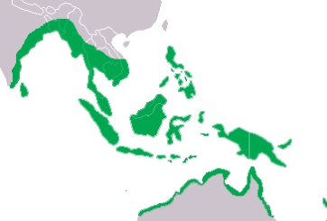

Cocodrilo Marino
| Tamaño | Los cocodrilos de agua salada son los reptiles más grandes en la actualidad, siendo los machos los cocodrilos más grandes actualmente, debido a su masa, peso y tamaño. Los machos pesan entre 480 y 1500 kg, y miden entre un promedio de 4,3 y 6,7 metros de longitud. Las hembras son mucho más pequeñas que los machos, entre 2,1 y 3,5 metros de longitud,[4] [5] y con un peso de 500 kg.[6] |
| Alimentación | La dieta de los cocodrilos marinos no está especializada, sino que es muy amplia e incluye desde los crustáceos hasta los mamíferos, pasando por los peces, los reptiles y las aves. Algunos de los animales que forman parte de su dieta son: Los cangrejos de los manglares. Las tortugas marinas. |
| Distribución geográfica |  |